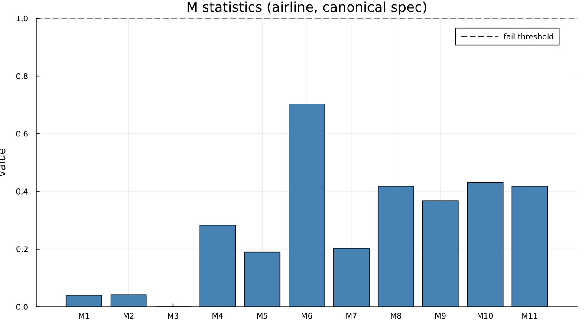
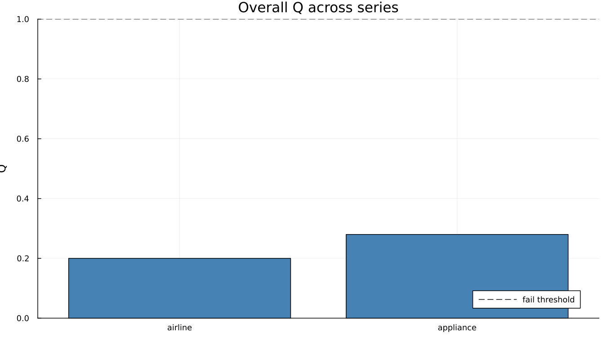

17. The M Statistics and Q
17.1 The eleven, in words
Every M statistic targets one specific way an adjustment can go visibly wrong — an unstable seasonal, a trend too rough to be believed, an irregular too large relative to the rest. Each is scaled so that 1.0 is the failure threshold: below 1.0 is acceptable, at or above is flagged. On the canonical airline spec:

Every one of the eleven sits comfortably under 1.0. M7 deserves its own sentence, because it is the one practitioners quote on its own more than any other: it tests specifically whether identifiable seasonality is present at all, and an M7 above 1.0 is often read informally as "this series probably should not be adjusted in the first place." Here it reads 0.203 — unambiguously identifiable seasonality, which is exactly what a reader would expect from twelve years of airline passenger counts.
Worth noticing directly from the numbers rather than the bar chart alone: M3 is exactly 0.000 and M6 is 0.703 — seventeen times larger, and both pass. The eleven statistics are not on a common "how badly did this go" scale. They measure genuinely different things, and comparing their raw values to each other across the row is not a meaningful comparison, even though comparing each one to its own threshold is.
17.2 How Q combines them
Q is a weighted average of the eleven, not a plain mean — some statistics carry more diagnostic weight than others in the combined score. On this run, Q = 0.20, comfortably under 1.0. Q2 is a companion figure that excludes M2 specifically; here it reads 0.22, close to but not identical to Q, which is expected since dropping one component of a weighted average moves the total only slightly when no single component is dominating it.
17.3 Where they mislead
Two limits are worth stating plainly rather than discovering by surprise later in the book.
They do not apply to SEATS at all. M1–M11 and Q are X-11 constructs, built from X-11's own B/C/D-pass intermediate tables. mstats returns nothing for a SEATS run — not an error, not a zero, nothing — because the question these statistics ask does not have a SEATS-shaped answer. Chapter 15 returns to this directly: it is the reason a SEATS adjustment cannot be compared against an X-11 one on Q alone.
A clean Q says nothing about whether the underlying regARIMA model was right. Chapter 19 demonstrates this on this exact series: the same airline run that produced the Q of 0.20 above also fails a Ljung-Box test for residual autocorrelation. Q measures the output's plausibility, not the model's adequacy, and those are different questions that happen to usually — but not always — agree.
A soft, illustrative comparison across two different series, run under comparable settings:

Both pass comfortably, and appliance's own Q (0.28) sits a little higher than airline's (0.20) without either being close to the 1.0 line — two real, different series, not a designed contrast between a clean case and a poor one.
See also: Chapter 15 for why Q cannot arbitrate between X-11 and SEATS. Chapter 18 for what QS adds that Q does not measure at all. Chapter 19 for the Ljung-Box failure hiding behind this chapter's clean Q.